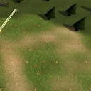
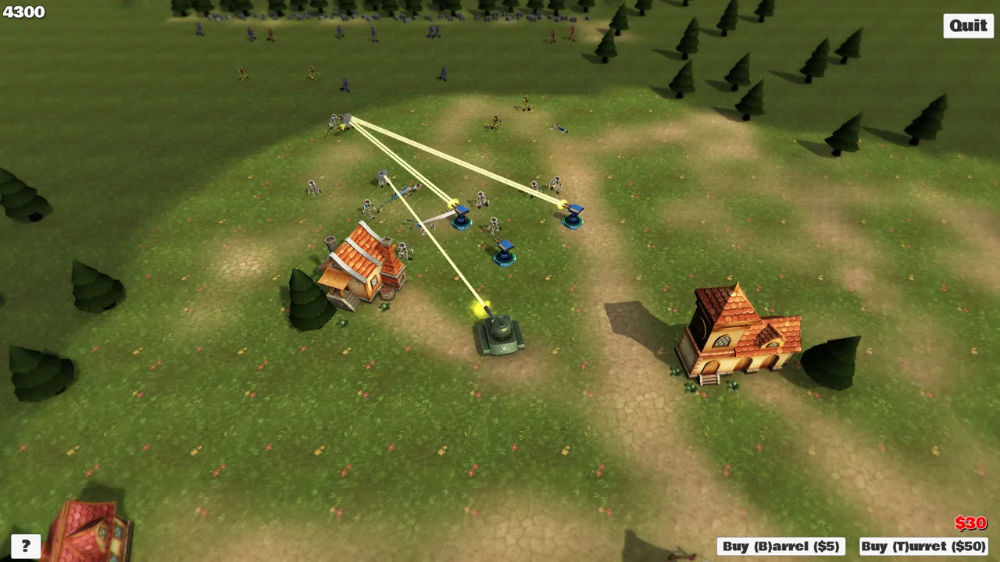
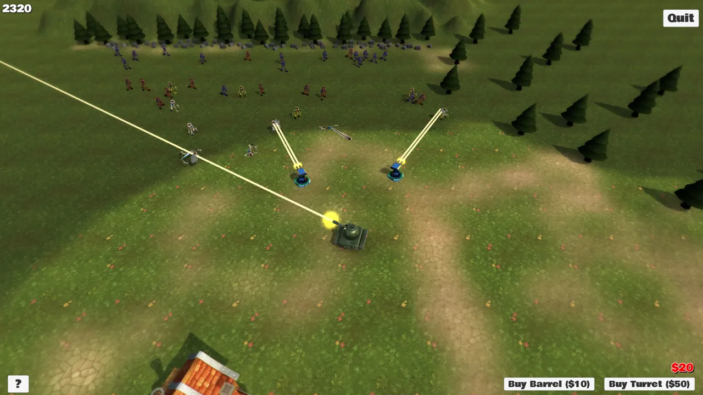

Tank vs Zombies
A 3D top-down, twin-stick shooter. Zombies are taking your land, so drive the tank into battle.

(open full size)Screenshots


(open full size)How to play
- Move with the arrow keys. Aim with the mouse.
- The left mouse button fires a laser. The right mouse button fires a cannon ball, which costs $10 of game money per shot. It destroys a big group of zombies, and you too, if you stand too close.
- Shoot zombies or run them over. Collect gold chests to earn money.
- Buy auto-turrets (key T) and explosive barrels (key B). They are placed behind the tank.
- There are four kinds of zombies. Some are very fast, and some are very strong.